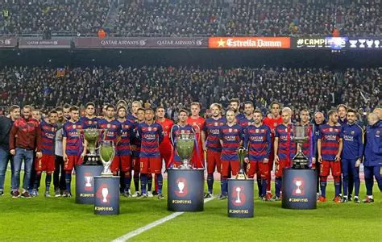

CHAMPIONS 2015
Introducción
Plantilla
Partido
Celebracion
ONCE DE COPAS
Adriano
Messi
Alves
Munir
Bartra
Neymar
Bravo
Pedro
Busquets
Pique
Douglas
Rafinha
Gumbali
Rakitic
Iniesta
Samper
Alba
Sandro
Kaptolim
Sergi Roberto
Mascherano
Suarez
Masip
Ter Stegen
Mathieu
Arturo Vidal
Cámara
